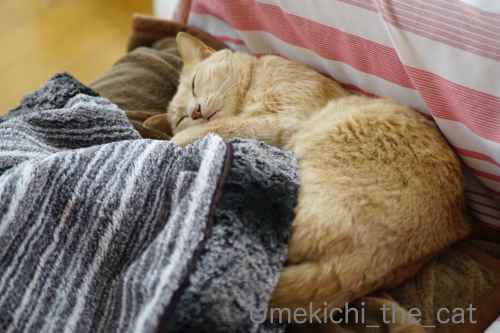
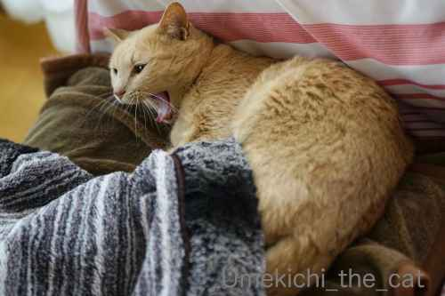
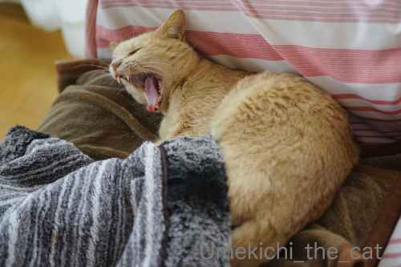
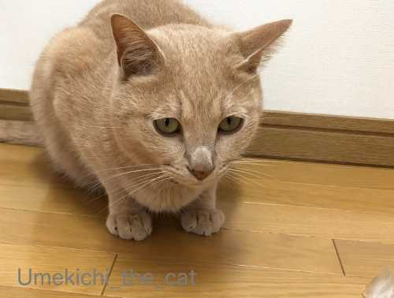
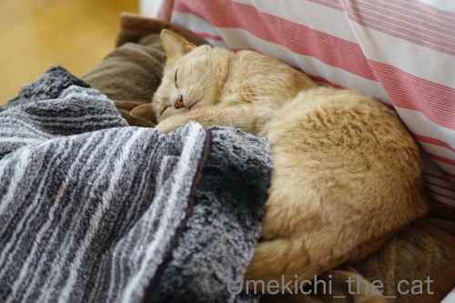
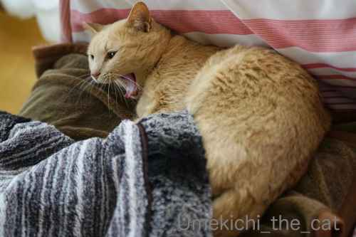
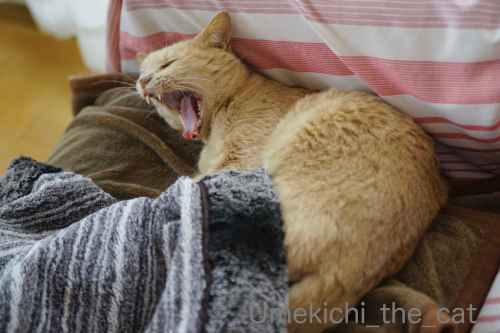
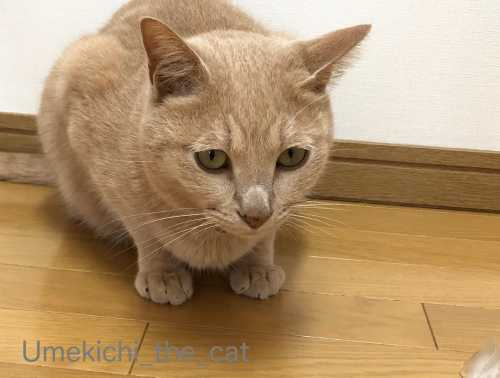

暖かかったり冷たかったり [梅吉]
GWに入ってから良いお天気続きの我が家地方。
衣替えをしてひたすらお洗濯やお家の片付けをしております。
はかどるのでつい頑張ってしまう。で、おばちゃんはそろそろ疲れてきたw
タイミングよく月曜日は雨の予報。
家事も手抜きして（笑）ゆっくり映画鑑賞をしたいです。
人間の衣類や寝具はすっかり夏物にしましたけど・・・・・

なんでしょう。
この暖かい系のものを片付けてはイケナイ雰囲気！！

![[猫]](https://blog.ss-blog.jp/_images_e/101.gif) わしのもうふは
わしのもうふは

しまったら あかんー！！
（梅吉心の叫び）
梅吉が下に敷いているフリースのブランケットは片付けさせてもらいましたけど
ちゅうちゅうブランケット（写真に写っているもの）と
その他のひざ掛けなどはいまだ出しっ放し(⌒-⌒;
ぬくぬくと暖かいところで眠るその一方、氷で遊ぼうとするカフェオレ色（笑

右端に切れ気味で写っている氷、わかりますか？
製氷庫をガサガサすると飛んでくるニャンコは多いと聞きますが
梅吉もその例に漏れず。
でも冷たさを楽しむわけでもなし。
（12秒です 音は出ません＾＾）
ガブッとするとお口が冷たくなるからエアガブ！？
iPhoneから梅吉の秘蔵映像もぞくぞくと発見されております。
ブログにアップしたいのですが編集が間に合わない〜。
皆様へのご訪問も遅れておりますm(_ _)m
 ↑ガブッと一押し↑
↑ガブッと一押し↑
衣替えをしてひたすらお洗濯やお家の片付けをしております。
はかどるのでつい頑張ってしまう。で、おばちゃんはそろそろ疲れてきたw
タイミングよく月曜日は雨の予報。
家事も手抜きして（笑）ゆっくり映画鑑賞をしたいです。
人間の衣類や寝具はすっかり夏物にしましたけど・・・・・

なんでしょう。
この暖かい系のものを片付けてはイケナイ雰囲気！！


（梅吉心の叫び）
梅吉が下に敷いているフリースのブランケットは片付けさせてもらいましたけど
ちゅうちゅうブランケット（写真に写っているもの）と
その他のひざ掛けなどはいまだ出しっ放し(⌒-⌒;
ぬくぬくと暖かいところで眠るその一方、氷で遊ぼうとするカフェオレ色（笑

右端に切れ気味で写っている氷、わかりますか？
製氷庫をガサガサすると飛んでくるニャンコは多いと聞きますが
梅吉もその例に漏れず。
でも冷たさを楽しむわけでもなし。
（12秒です 音は出ません＾＾）
ガブッとするとお口が冷たくなるからエアガブ！？
iPhoneから梅吉の秘蔵映像もぞくぞくと発見されております。
ブログにアップしたいのですが編集が間に合わない〜。
皆様へのご訪問も遅れておりますm(_ _)m

カフェオレ色の梅吉

梅吉 2023年8月10日 永眠


梅吉と出会った譲渡会

犬猫の理由なき殺処分ゼロ
妄想広告
UMEKICHI 光

爆発的に早い！
時々攻撃的！
Thanks to Mr.Boss365
爆発的に早い！
時々攻撃的！
Thanks to Mr.Boss365

エアガブッ! は思ったより迫力ありますね。寸止めのキレ具合がスゴイィィ!
うちも猫毛布類は片付けたいのにまだ取り上げられないのです~。
by zombiekong (2020-05-04 00:13)
私はまだ衣替えも布団も変えてません（ﾟ□ﾟ）
梅吉さんはまだ寒いのか？
by 英ちゃん (2020-05-04 02:07)
いっきに暖かくなってきましたね♪
少し歩いたら汗ばむ陽気に早く体を慣らしたいと思います。
毛布は暖かさよりふわふわ感が大事！？
枕が変わると寝れないに似た感じでしょうか。
そして氷のいっぱい入ったカフェオレが飲みたくなりました(笑)
動画は氷という物体と戦っているのか(;'∀')
by yamatonosuke (2020-05-04 02:22)
氷好きなニャンコって多いんですか？そんな風にか
わいく遊んでいる姿は見た事ないかも。今度わざと
与えてみよう(￣ー￣)
うちでは製氷機をガサガサすると正也が温室の窓を
ドンドンと叩きます。晩酌を始める前に飯をよこせ
って事なのかしらね。なんか変な事覚えちゃって。
by mio (2020-05-04 06:20)
噛み付きたかったけど固くて歯が立たなかったとか？
うちの子たちは氷にまったく興味無しです＾＾；
by ぽちの輔 (2020-05-04 06:46)
氷をガブッとやろうとするも、直前に冷気で引いてしまうんでしょうか？
こっちは中途半端な季節で昨日みたいに夏日になったと思えば、今日はストーブを付けようかな、と迷っています。まだまだ衣替えは出来ません。
by kou (2020-05-04 07:02)
こんにちは！
気持ち良さそうに寝ていましたね（"＾ω＾）・・・
しあわせ感いっぱい！
by Take-Zee (2020-05-04 08:08)
お天気がいいと色々はかどりますよね(^^
私も冬物をかなり撤収して洗濯して、ぎゅうぎゅうだったクローゼットに隙間を作って収納しました。
ひざ掛けもしまっちゃいました(;^_^A
これはこれで清々しい達成感♪ なのにどうせ暇なんだろ？という相方君のひと言にカッチ～ンでゴングが鳴ってしまうｗ
梅吉さんのエアガブっ面白い♪ 冷たいのでかじりはしないのかな？
うちのニャンズは氷の音には反応しませんでしたが、間違って床に落としたらシュ~っと滑ったのでNaoちゃんがガン見していたことはあります。
今日は雨かと思ったら夜明け前に上がって曇ってますぞよ。
by marimo (2020-05-04 08:42)
昨日、冬物をじゃんじゃん洗って、空いた空間に夏物を出していたのですが、なんとなく、今の時期に着るものがないなーと悩んでました。この時期、何を着ていたんだろう？と思いつつ、一旦終了。しかし、数時間後、そういえば、あの服がない！と具体的なものに気づき、収納ケースを確認したら、先行して片付けた冬物の下に春物が隠れてたーーーー！で、出した夏物のうち盛夏に着るものをしまって、春物出して‥‥なんか、衣替えを2クールやったような気分。
梅吉さん、エアガブッ！からの後ずさり。楽しいなぁ。
仔猫の季節になりましたが、1人暮らしの上に無収入では里親募集とかでもらい受けることは難しいので、かくなる上は、自分で出会うしかない！と思ってるのですが、出会わないんですよねぇ。その代わり、拾う時には複数匹が基本だから、覚悟しなさいって、よく拾っちゃう知り合いに言われてますけれど(^^;)
by ChatBleu (2020-05-04 09:28)
梅吉さんは暖かいブランケットの上がお気に入り？
今日は朝から雨の東京です(^^)
by ma2ma2 (2020-05-04 09:34)
毛布の上で気持ち良さそうです♪
これは片づけられないですねぇ・・
氷！！エアガブ！！まさに寸止めですね(#^.^#)
by きぃ (2020-05-04 10:19)
うちも部屋の中はすっかり夏仕様にかわりましたが
ソファーの上のカシミアストールだけは残ってます(笑)
これはね、年中出しておかないとねｗｗ
昨日はエマールでストールも洗濯したよー。
あおはシャンプーされて自分の匂いが消え、ストールも自分の匂いが消え
いじけてました(笑)
でもそのあとはストール抱えて寝てたｗｗ
梅吉くんもブランケットは大事よね^ｍ^
ずっと出しておいて貰おう♪
by リュカ (2020-05-04 10:30)
梅吉さんのエアガブかわいい～っ(#^^#)
ウチのも製氷ボックスをジャラッと開けるとすっ飛んで来て、早く床に置けと催促します。
でもやっぱり冷たいらしく、しばらくすると自分の手を舐め始めて氷は放置。拭き掃除は私の仕事です^^;
急に気温が上がって一気に冬物片付けてしまいたい！けれど、また冷える日もあって悩ましいところ。
まあ・・ウチはこてつの避難所としてコタツを年中出しっぱなしの季節感のないリビングですから夏も冬も変わり映えしません(≧▽≦)
さすがに着る事のないダウンや分厚い毛布から順にぼちぼち片付け中。
こてつは暑がりで、もう膝どころか風通しのよい窓際の猫ベッドに入りびたりです。
by ゆきち (2020-05-04 11:07)
うちのソファももふもふ毛布は洗濯して片付けましたが
金魚柄の薄いのはまだ出したままです( ^ω^ )
ヘソ天で寝てるので、片付けても良いかなぁと思いますが
梅吉さんも大好きなブランケットを片付けるのはNGとのことなので
うちももうしばらくはそのままにしておきますw
by ニッキー (2020-05-04 11:07)
こんにちは。
梅吉君、幸せそうな良い寝顔ですね。
季節の変わり目で片付けしたくなりますが・・・
ニャンズにはまだ早いみたいですね。いいあくびです。
小生猫の敷物も変えたいのですが、洗濯等が間に合わない状況。ボスママ次第です。
かじったフリ？おとぼけ感が堪らない動画です。
遊びたいけど冷たい？正直者の梅吉君ですね。
この際、編集なしでアップです！？(=^･ｪ･^=)
by Boss365 (2020-05-04 11:52)
うちもゆづのフリースを何枚か洗濯。
取り込んで積んであったら、その上に見事にケロ…(ｰｰ;)
by も〜 (2020-05-04 11:53)
俺もしみるから齧れないなぁ
エアガブしただけでもしみそうで怖いもんなぁ
by (。・_・。)２ｋ (2020-05-04 12:24)
梅吉さん、冷たいの、苦手なのかな〜( *´艸｀)。
by nachic (2020-05-04 17:38)
それにしても梅吉さんの寝顔、気持ち良さそうで癒されますね♪
昼夜の寒暖差がまだ激しいので、毛布はまだ仕舞わない方がいいかもしれませんね。^^;
by yes_hama (2020-05-04 21:47)
エアで噛みつく様子が可愛い～
うちの暑がり子猫は何も敷いてないところで
気持ちよさそうに寝転がってます（苦笑）
by 藤並 香衣 (2020-05-04 23:27)
かじったフリ～～～！！笑
そのあとのごまかしてる顔（？）がたまりません。
by liang (2020-05-04 23:41)
梅吉さん、しまったらあかん！これ言ってますね^^
by ニコニコファイト (2020-05-05 09:19)
毛布に愛着が湧いちゃったんですね。
by 旅爺さん (2020-05-05 10:38)
冷たいのでエアーガブなのですね(^_^;)
最近は気温もあがってきて、時間もあるんで
窓を全開にして、断捨離がんばってみました。
息子の部屋が想像以上に汚くて、
かなりココロ折れましたわ～(^_^;)
by よーちゃん (2020-05-05 14:23)
ぬくぬくで眠って、氷遊び・・・なんか分かる気がする、こたつでアイスの感覚に似てるかも＾＾。
我が家は、ゆっくり映画鑑賞でした。待ちに待った日本の映画。「決算！忠臣蔵」♪
by Inatimy (2020-05-06 06:28)
かわいくて、ホント片付けられない感じ♩
まだ梅雨時はちょっと寒くなったりもしますし～^m^
エアガブ、ちょっとたじろいでる風もかわいいですね。
by ふにゃいの (2020-05-06 20:51)